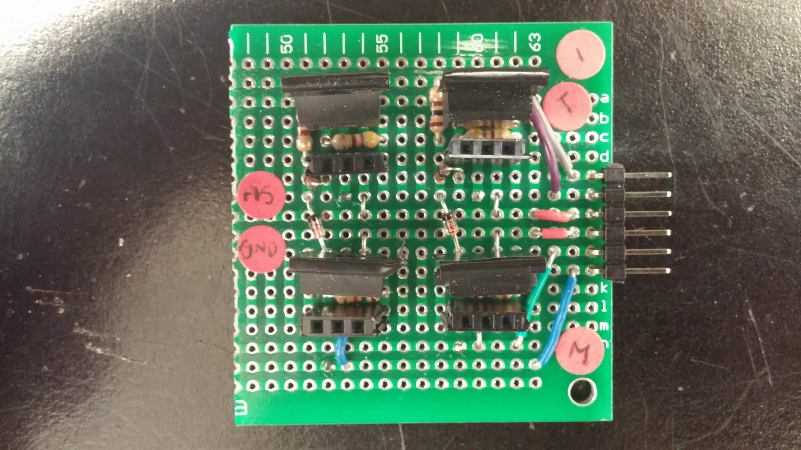
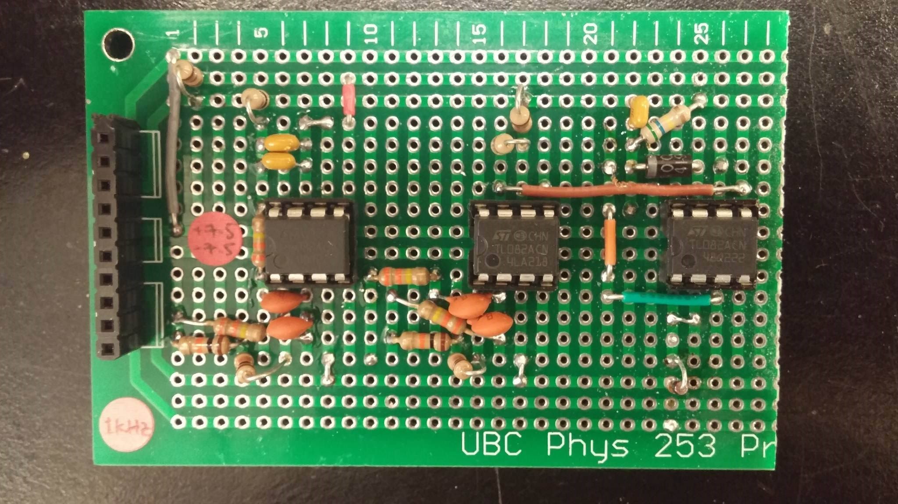
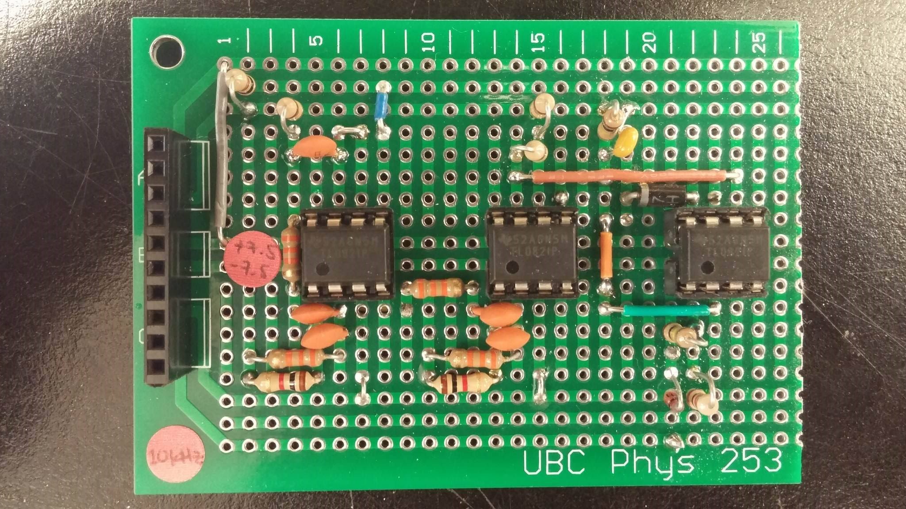

Electrical Overview

Brains and Brawn
Veronica is controlled by the TINAH board, and extensions shield which connects to the Wiring Board.
Connected TINAH on Veronica
Power, Power
"Power, Power" clip from Anchorman (2004)
The TINAH and H-Bridges/DC Motors are powered by a 14.8 V nominal lithium-polymer battery, and the sensor circuitry are powered by two 7.4 V nominal lithium-polymer batteries. The division in batteries per different purpose on Veronica ensured that the sensitive sensor circuitry didn’t fail if the current draw from the DC motors became high. The servo motors used to lift the basket to the zipline, lift the arm, and open the claws were each powered by their own stepped down regulated voltage from the 14.8 V battery. In addition, the usage of a star point connection for ground made sure that there was no noise in sensor signals and no ground loops.
Drive
Two H-Bridges are incorporated in Veronica to drive both of her motors at high power. The H-Bridges are constructed from the following design:
H-bridge circuit diagram using zener diodes

Meticulous attention to detail and a careful soldering job made for beautifully neat and compact H-Bridges that were easy to debug and simple to replace components.
Veronica used a total of four reflectance sensors (QRD1114) to follow the tape along the competition surface, detect the holding tank, and detect tape intersections where agents were held captive.
"Alarmed Gate" IR Detection
To rescue the agents without being captured, Veronica needed to pass through the alarmed gate while the alarm was disabled. A 10kHz and 1kHz signal from the gate beacon determined whether the gate was armed or disarmed respectively. Two infrared detectors (QSD124) were used for two independent 1kHz and 10kHz detector circuits to digest the signal coming into the infrared detectors to something simple to use in software to the TINAH. This was done mainly by filtering the desired signal, converting the resulting wave into a DC signal of the wave’s amplitude, and then amplifying that so it was usable in software.
 Both above circuits (1kHz detector circuit and 10kHz detector circuit) have a buffer, a DC block, two filters, an amplifier, a peak detector, and an additional buffer/amplifier to transform the signal received from the infrared detectors (QSD124) to a usable, high/low signal input to the TINAH board. Once again, a neat circuit layout and careful soldering work made for robust PCBs.